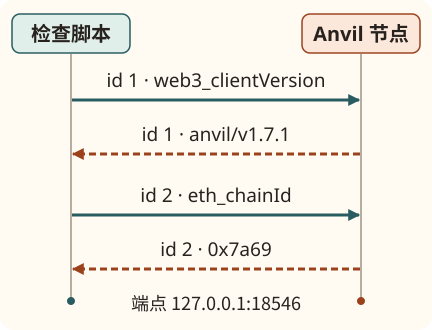
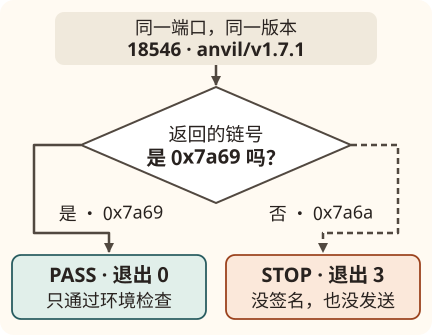

本页目录
我们就在这台机器上复现一次。不装钱包，不领币，不发交易。能开终端、读 JSON 就够了；第 01 课讲的区块哈希，会在最后一次排障用到。完整实验脚本：networks.sh。
把一次调用拆开看
你写 Java 时可以调用 client.getChainId()。但答案不在 client 对象里：客户端要把方法名送给另一个进程，等它回话。这就是这里的 RPC（远程过程调用）；这次「远程」只有从本机一个进程到另一个进程那么远。


拆开图里的第二个来回。下面是正常时的报文示意，实验脚本不会逐包打印它们。
{"jsonrpc":"2.0","id":2,"method":"eth_chainId","params":[]}
{"jsonrpc":"2.0","id":2,"result":"0x7a69"}
id:2 像叫号单，表示「这是给第 2 个请求的答复」，不是链号。脚本里的 evm_read 先检查 HTTP 状态和 JSON-RPC 应答：请求号要对得上，有 error 或没有 result 都不行。就算 HTTP 是 200，也得打开信封看。 第二封应答里的 result 才拿来比。
这条线上谁做了什么？Anvil 是节点，它按自己的配置维护账本、回答查询。脚本是调用方。Bitcoin 那边多一层：脚本启动 bitcoin-cli，由它向本机的节点进程 bitcoind 提问。把 bitcoin-cli 关掉，不等于关掉了节点。
那钱包和区块浏览器呢？如果收银员要授权一笔支出，钱包会准备交易，有签名能力的钱包可以自己签或找签名器；观察钱包只能看。浏览器则把后端查到的区块、交易做成可搜索的网页。比如浏览器里搜得到某个收款地址，这既没证明你的程序连接着那个后端，也没证明那张订单已付。本次实验连这两样都不用。
跑一次，看三行
从项目根目录执行 cd labs。只有网页的话，先把脚本下载到空目录，再进入那个目录。需要 Bitcoin Core 30.5 的 bitcoind、bitcoin-cli 和 Anvil 1.7.1；还需要 Bash 3.2+、Python 3.8+ 和 lsof。没装齐先看本课安装命令。都就位后运行：
bash ./networks.sh
脚本不复用你平时的节点。它创建临时目录，把 Core 的 RPC 绑在 127.0.0.1:19443，用 -regtest -disablewallet -networkactive=0 -listen=0 启动；Anvil 绑在 127.0.0.1:18546，用 --accounts 0 --no-mining --no-cors --quiet 启动。一个不加载钱包，一个不生成开发账户，也不从远端分叉。两边都从创世状态起步。节点会初始化自己的数据；这里的「只读」指客户端不写链，不是说 Anvil 所有接口天生只读。
读终端时先找行首，再读字段。下面是正常时应有的读数，<PID> 是操作系统当场分的进程号，交接时换成你实际看到的数字。
BTC endpoint=127.0.0.1:19443 pid=<PID> version=300500 chain=regtest height=0 peers=0
EVM endpoint=127.0.0.1:18546 pid=<PID> client=anvil/v1.7.1 eth_chainId=0x7a69
PASS chain=regtest eth_chainId=0x7a69 read_only=true
读 BTC 行。 getblockchaininfo 回答 chain（网络名）和 blocks（打印成 height）。regtest 是本地回归测试网络；只有创世块时高度是 0，不是 1。getnetworkinfo 回答的是服务端版本和连接情况：300500 表示 30 × 10000 + 5 × 100 + 0，peers=0 是这里刻意断开节点间连接的结果，不能据此诊断「RPC 坏了」。脚本还核对未打印的 networkactive=false。这些都对上，才轮到 Anvil。
读 EVM 行。 web3_clientVersion 给出版本，eth_chainId 给出十六进制的链号。把 0x7a69 算成十进制：7 × 4096 + 10 × 256 + 6 × 16 + 9 = 31337，这才对上工单。PASS 和退出码 0 的意思到此为止：两个实验环境符合要求，没查余额，更没有付款回执。
这一步有什么用？同一个查询也能发往主网、公共测试网或本地链。主网处理真实资产，在那里签一笔小额付款也是真授权。Bitcoin 的 testnet4、Ethereum 的 Sepolia 是别人也在用的公共测试网，记录可公开查，不要放秘密；测试币到账不会增加主网余额。这里的 regtest、Anvil 都由你自己启动，可以从零重来；本地跑通并没有检验主网的共识、负载或最终性。
故障一：刚才还 PASS，怎么连不上了？
同事跑完脚本，过了一分钟，另一个程序访问 127.0.0.1:18546 报 Connection refused。该改链号吗？先在本机查有谁还在接电话：
lsof -nP -iTCP:18546 -sTCP:LISTEN || printf 'lsof exit=%s\n' "$?"
假设工具没报错、没有监听记录，而且刚才那次实验已正常退出。解释很简单：脚本退出前已经关掉了自己启动的节点，删除了这次的数据目录。连接都没建起来，就没有 RPC 应答，更没有一个「错误链号」可读。 要复查环境，重新运行整个脚本；不要拿别人的节点补这个空位。
反过来，如果这个命令查到另一个进程正占着 18546 呢？脚本的 owned_node 要求 lsof 同时匹配本次子进程 PID、指定回环地址和端口。旧服务占着端口，新 Anvil 若因此启动退出，你可能会看到 BTC 行，接着是 ERROR anvil 启动退出…，不会有带 actual 的错链判定。查明监听者是谁，协调释放端口后再跑，不要 killall。Core 的 19443 也可以用同一条命令换端口排查；缺工具则先看 command -v bitcoind bitcoin-cli anvil lsof。
Core 的 CLI 只用这次目录里的认证 cookie；EVM 客户端直连回环，不走系统代理。脚本正常、报错或按 Ctrl+C 时只清理自己启动的进程。回环只是「留在本机」，不是链身份证、更不是访问权限；不要改为 0.0.0.0 或转发到公网。
故障二：请求成功，服务器也没说谎，为什么停？
保持交付单 31337 不动，把服务端改成 31338。参数只传给新 Anvil 的 --chain-id，不是改客户端的答案。脚本只接受 31337 到 31399。端口不变，版本不变；如果只看图里的第一次应答，你会猜两次都通过。
if bash ./networks.sh 31338; then rc=0; else rc=$?; fi
printf 'exit=%s\n' "$rc"
在 BTC 行之后读 EVM 行。31338 比 31337 多一，十六进制末位 9 再加一是 a。所以预期仍有 client=anvil/v1.7.1，却变成 eth_chainId=0x7a6a。这是成功读到了不该使用的链，不是网络超时。


谁踩的刹车？找脚本结尾的 actual = inspect(...)，它拿到刚读回的值；接下来 if actual != EXPECTED_EVM 把它同预先写好的 0x7a69 比较。这里不相等，预期收尾是：
STOP expected=0x7a69 actual=0x7a6a before_sign=true before_send=true
exit=3
STOP 是客户端的决定，不是节点拒绝了一笔交易。整份脚本只有前面四个查询方法，两条分支都没有签名或发送交易。验收错链要看到实读链号、STOP、退出码 3，且没有 PASS；少装一个程序也会非零，不能当作测到了错链。换成 Java 服务，道理一样：允许的链号从部署单拿，别用 RPC 刚返回的值去填期望值。应修正部署或端点，不要靠「先签一笔试试」查错。
故障三：链号没变，昨晚的订单怎么不见了？
换一个查账示例，不是脚本输出。昨晚交班时，结算方独立留了高度 12 的区块哈希，末四位是 b17a。今早服务迁机，仍报 anvil/v1.7.1、0x7a69。你只读查询相同高度（eth_getBlockByNumber 的高度参数是 0xc），今天区块哈希的末四位却是 9c20。
末四位不同，全串就一定不同：至少在高度 12，今天看到的不是昨晚那一块。反过来，末四位相同不能认作相同，交接时应比完整的 32 字节。现在该暂停拿这份账核销订单，找部署方核对端点和可信区块检查点；不要靠重试付款「补」一条流水。仅凭这两次读数，还分不清是接错私链还是那段历史发生了变化，更不能说客户没付过。
eth_chainId 是可配置的整数。对带链号防重放的交易，签名会绑定链号；它并不绑定昨晚那份数据目录。两台私链可以都填 31337，两个 regtest 也都叫 regtest。本课脚本每次重新起链，根本没承诺保留上一次的数据。真实结算还要认证 RPC 端点（它也可能谎报），对上可信历史，再核对那笔交易是否成功、收款方和金额单位是否属于这张订单。端口、链号、区块哈希回答的是三个不同的问题。
独立作业：交班时留下两次读数
交付单还是 31337，另一组却把 Anvil 设成了 31360。先别运行：从 0x7a69 往上算，把十六进制进位和你会做的决定记下来。然后在 labs/ 跑两次，实测能否对上预测：
for chain in 31337 31360; do
if bash ./networks.sh "$chain"; then rc=0; else rc=$?; fi
printf 'launch=%s exit=%s\n' "$chain" "$rc"
done
交一份短日志：日期、平台、实际命令、两次 BTC / EVM 行、最后的 PASS 或 STOP 及退出码。末尾回答同事一句：「明天如果链号又恢复正常，就能用这个结果给昨晚那笔订单销账吗？」不贴完整终端历史，不交节点目录、钱包文件、密钥、助记词、认证 cookie 或带凭据的 URL。
判据： 两次 Bitcoin 都是 regtest；正常链退出 0，异常链的实读值解码后是 31360，退出 3、没有 PASS。应能指出：即使链号匹配，还要确认哪个端点在回答、可信检查点是否吻合，以及那段历史里究竟有没有与订单匹配的付款。
安装：只取这次用的三个程序
用 macOS 或常见的 glibc Linux／WSL2，普通用户即可。Bash 之外只用 Python 标准库和 lsof 跑实验；下载另外需要 curl、tar、awk、openssl 和 sha256sum 或 shasum。Debian／Ubuntu 若缺系统工具，可用 sudo apt-get update && sudo apt-get install -y bash python3 lsof curl tar gawk openssl coreutils ca-certificates 补齐。不要用 sudo 跑节点。 不需要 JDK、Node.js、Foundry 全套工具或 Docker 来运行本课脚本。
进入 networks.sh 所在目录，先单独输入 bash 并回车，再把下段粘贴到子 shell。它只提取 bitcoind、bitcoin-cli 和 anvil。首次下载要联网，装好后三个排障例子都不用公网。
set -eu
set -o pipefail
umask 077
test -r ./networks.sh
case "$(uname -s)/$(uname -m)" in
Darwin/arm64) core=arm64-apple-darwin; anvil=darwin-arm64 ;;
Darwin/x86_64) core=x86_64-apple-darwin; anvil=darwin-amd64 ;;
Linux/aarch64|Linux/arm64) core=aarch64-linux-gnu; anvil=linux-arm64 ;;
Linux/x86_64) core=x86_64-linux-gnu; anvil=linux-amd64 ;;
*) echo '本段不适用于该架构' >&2; exit 1 ;;
esac
KIT=$(mktemp -d "${TMPDIR:-/tmp}/network-tools.XXXXXXXX")
trap 'rm -rf -- "$KIT"' EXIT
(
cd "$KIT"
base=https://bitcoincore.org/bin/bitcoin-core-30.5
archive="bitcoin-30.5-$core.tar.gz"
curl -fLsS "$base/$archive" -o "$archive"
curl -fLsS "$base/SHA256SUMS" -o SHA256SUMS
awk -v name="$archive" '$2 == name { print }' SHA256SUMS > selected.sum
test -s selected.sum
if command -v sha256sum >/dev/null; then sha256sum -c selected.sum; else shasum -a 256 -c selected.sum; fi
tar -xzf "$archive" bitcoin-30.5/bin/bitcoind bitcoin-30.5/bin/bitcoin-cli
pkg="anvil-$anvil"
registry="https://registry.npmjs.org/@foundry-rs/$pkg"
curl -fLsS "$registry/1.7.1" -o release.json
curl -fLsS "$registry/-/$pkg-1.7.1.tgz" -o anvil.tgz
expected=$(python3 -c 'import json; print(json.load(open("release.json"))["dist"]["integrity"])')
actual=$(openssl dgst -sha512 -binary anvil.tgz | openssl base64 -A)
test "sha512-$actual" = "$expected" || { echo 'Anvil 归档摘要不符' >&2; exit 1; }
tar -xzf anvil.tgz package/bin/anvil
)
export PATH="$KIT/bitcoin-30.5/bin:$KIT/package/bin:$PATH"
Core 来自 30.5 官方发布目录；Anvil 来自 Foundry v1.7.1 对应的 @foundry-rs 平台包。摘要能检查归档和发行清单是否一致，不能替代对发布者的独立认证；更严格的做法见 Core 官方签名验证说明。留在同一个 shell，运行上面的 bash ./networks.sh。作业做完再输入 exit，临时工具目录会随之清理。
查证原文
- Bitcoin Core 30.x RPC：getblockchaininfo 定义
chain与blocks；getnetworkinfo 定义节点版本、连接数和networkactive，区别于 CLI 自身版本。 - Foundry：Anvil 命令参考，核对
--host、--chain-id、--accounts与--no-mining；以本课固定发行版的anvil --help为准。 - Ethereum：JSON-RPC 说明
web3_clientVersion与十六进制数量；EIP-695 规定eth_chainId，不应拿net_version替代；EIP-155 给出传统交易签名绑定链号的具体例子。
卷末验收：接手一张异常付款工单
工单 R-36（演练）。 销售发来一句话：「商户 B 应收 1 张券；有人批过了，账页也有凭条 36，能把状态从待核对改成已付吗？」你值班，只查账，不补发、不改附件。交班时要给一个能执行的答复：改状态、拒绝这次核销，还是等谁补哪项证据？
先打开账页，不看销售的结论。 这是独立于第 01 课范例的四条新记录。每条依次是凭条号、付款方、收款方、券张数，各占一个字节；A、B、C 编号是 01、02、03。从左到右抄录如下：
21010202 22010303 23030202 24020101
审计方事先保管的根是 c3322a5de98353549cc1d77445b20caf80b355a63224466f6d3eead3b5f1dc08，不要把现场算出的值冒充它。用第 01 课的 JShell 做法，从四条记录拼出凭条 36（0x24）的证明：记下叶子位置、两个兄弟摘要、每次谁放左边，以及是否对上审计根。第二次只交换凭条 36 的付款方和收款方，其余输入不动，用原来的证明和审计根再验。两次都写出「谁付谁几张」，别只交两个布尔值。
其余附件按这三步拆，不必把不同系统的凭据硬凑成一笔交易：
- 审批单。 在
labs/把IntentLab.java复制到临时目录，不动课程源码。把intent改成R-36:B:1券，把篡改分支改成intent.replace("B", "C")，输出标签也从changed_amount改成changed_recipient。在副本目录执行java IntentLab.java；用同一把本次实验公钥、同一份原签名比较两次验签结果，保留密文篡改试验的结果。写清「批给谁」和「有没有执行」哪一个能由签名回答。 - 迁机清单。 它把 BIP84 的第二张收款单误记成了索引
0。拿第 03 课公开的账户扩展公钥，用那一课观察钱包的代码分别派生/0/0、/0/1，与规范的第二个收款地址整串比较。交两条相对路径和各自的匹配结果，不加载签名材料，不交扩展密钥。这里比较的是 BTC 地址，不是券账上的流水。 - 部署记录。 附件只有「RPC 能连上」。请另一位复核人从
31338–31399中任选一个值，不用刚练过的31338或31360。你先写十六进制预测，再照本课错链命令把值传给脚本。交EVM行、最后判定和退出码，指出究竟是没连到节点，还是连到了不符合工单的链。
交班判据。 复核人按你记下的版本、命令和输入能重做：凭条位置是 3（从 0 数），两个兄弟都放在当前摘要左边；原凭条能对上根，换方向后不能。原文审批验签通过，改收款方后不通过，密文改动被拒绝。只有 /0/1 匹配第二张收款单；错链是在读出链号后、签名和发送前退出 3。
最后看最容易漏的一步：凭条 24 02 01 01 写的是 B 付 A 一张券，不是 B 收一张券。所以拒绝用这张凭条核销，订单继续待核对；这不等于断言没有别的付款。请结算方补一条指向 R-36 的实际结算流水，标明是哪份账、哪条记录，能核对收款方 B、方向和单位「1 张券」。不索取钱包秘密，也不要让客户再付一次。